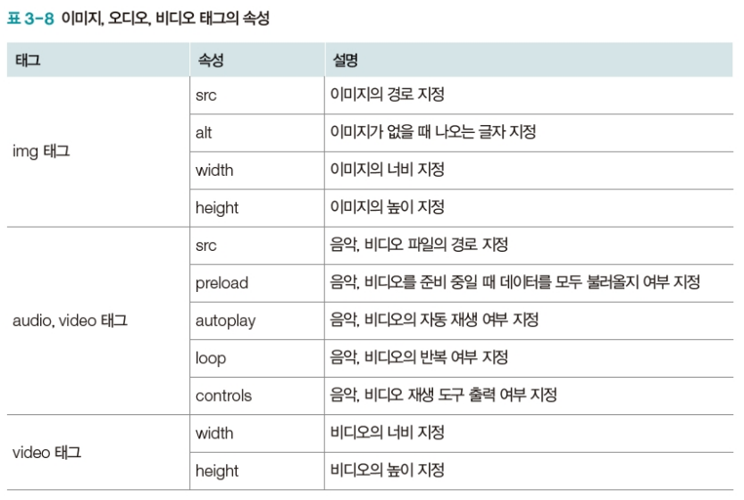
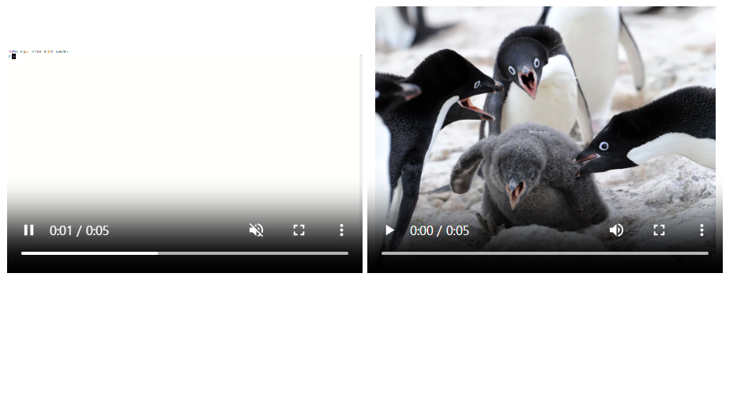

기본 태그 중 미디어 태그는 이미지, 오디오, 비디오 등 멀티미디어를 넣는다.
다음 세가지가 있다.
<img>는 이미지
<audio></audio>는 오디오
<video></video>는 비디오를 넣는다.
속성들은 다음과 같다.

기본적으로 src 속성에 미디어의 경로를 입력하여 미디어를 삽입한다.
img 태그를 써보자.
<!--이미지 태그-->
<!DOCTYPE html>
<html>
<head>
<title>이미지 태그</title>
</head>
<body>
<img src="https://image.dongascience.com/Photo/2023/08/cf7a7ec6b7f4a4264eb6dd509c83c5e9.jpg"
alt="펭귄" width="200" height="300">
<img src="nothing" alt="그림이 없어" width="50">
<br>
<br>
</body>
</html>
width와 height로 크기를 조절할 수 있고 alt(alternate)로 그림이 로드되지 않을 경우 글자를 띄울 수 있다.
다음은 audio 태그 예시이다.
<!--오디오 태그-->
<!DOCTYPE html>
<html>
<head>
<title>오디오 태그</title>
</head>
<body>
<audio src="sound.mp3" controls muted preload="auto" loop></audio>
<audio autoplay controls>
<source src="sound.mp3" type="audio/mp3">
<source src="sound.ogg" type="audio/ogg">
your browser don't support audio tag.
</audio>
</body>
</html>
오디오 태그와 비디오 태그 모두 controls 속성을 넣으면 재생 도구를 출력한다.
참고로 크롬에서는 autoplay 속성이 소용이 없다. 자동재생을 막는 정책을 갖고 있기 때문이다.
두번째 audio 태그처럼 태그 내부에 source 태그를 여러개 넣어서 파일 형식이 mp3, ogg 둘 중 하나이면 재생되게 할 수 있다. 브라우저가 audio tag를 지원하지 않으면 내부의
텍스트를 출력한다.
다음은 video 태그의 예시이다.
<!--비디오 태그-->
<!DOCTYPE html>
<html>
<head>
<title>비디오 태그</title>
</head>
<body>
<video src="video.mp4" controls autoplay loop muted width="400" height="300"></video>
<video controls poster="https://i.namu.wiki/i/aoXEvwYjd408MQfYqtiIFQ5GqPB_QHGkF_AeTneTugXsd7veCXrnWCje1caonFsBoni_P0W6g8-CvpkTU-ERyw.webp" width="400" height="300">
<source src="video.mp4" type="video/mp4">
<source src="video.webm" type="video/webm">
브라우저가 비디오 태그를 지원하지 않아요.
</video>
</body>
</html>

poster 속성으로 동영상이 로드되는 동안 표시할 이미지를 넣을 수 있다.